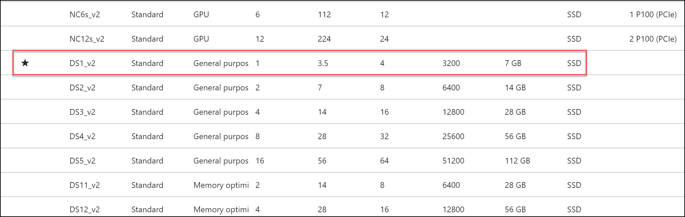

OSS DevOps
Hands-on lab step-by-step
April 2018
Information in this document, including URL and other Internet Web site references, is subject to change without notice. Unless otherwise noted, the example companies, organizations, products, domain names, e-mail addresses, logos, people, places, and events depicted herein are fictitious, and no association with any real company, organization, product, domain name, e-mail address, logo, person, place or event is intended or should be inferred. Complying with all applicable copyright laws is the responsibility of the user. Without limiting the rights under copyright, no part of this document may be reproduced, stored in or introduced into a retrieval system, or transmitted in any form or by any means (electronic, mechanical, photocopying, recording, or otherwise), or for any purpose, without the express written permission of Microsoft Corporation.
Microsoft may have patents, patent applications, trademarks, copyrights, or other intellectual property rights covering subject matter in this document. Except as expressly provided in any written license agreement from Microsoft, the furnishing of this document does not give you any license to these patents, trademarks, copyrights, or other intellectual property.
The names of manufacturers, products, or URLs are provided for informational purposes only and Microsoft makes no representations and warranties, either expressed, implied, or statutory, regarding these manufacturers or the use of the products with any Microsoft technologies. The inclusion of a manufacturer or product does not imply endorsement of Microsoft of the manufacturer or product. Links may be provided to third party sites. Such sites are not under the control of Microsoft and Microsoft is not responsible for the contents of any linked site or any link contained in a linked site, or any changes or updates to such sites. Microsoft is not responsible for webcasting or any other form of transmission received from any linked site. Microsoft is providing these links to you only as a convenience, and the inclusion of any link does not imply endorsement of Microsoft of the site or the products contained therein. © 2018 Microsoft Corporation. All rights reserved.
Microsoft and the trademarks listed at https://www.microsoft.com/en-us/legal/intellectualproperty/Trademarks/Usage/General.aspx are trademarks of the Microsoft group of companies. All other trademarks are property of their respective owners.
Contents
Migrate an online ticketing system from a hosted environment to Azure and fully embrace modern DevOps tools, investigate PaaS Services and leverage their existing knowledge of Jenkins integration with Azure.
Attendees will be better able to deploy complex OSS workloads into Azure PaaS using Azure App Services on Linux.
The scenario will challenge you to setup continuous integration and delivery of an application using open source tools such as Jenkins and GitHub along with automated deployments to Azure App Services. You will learn about continuous deployment and the benefits of staged publishing.

An Azure Subscription
A GitHub account
| Description | Links |
| Jenkins Documentation | https://jenkins.io/doc/ |
| GitHub Documentation | https://help.github.com/ |
| Azure Web Apps Documentation | https://azure.microsoft.com/en-us/services/app-service/web/ |
| Azure Database for MySQL | https://docs.microsoft.com/en-us/azure/mysql/ |
| Azure Database for MySQL | https://docs.microsoft.com/en-us/azure/mysql/howto-create-manage-server-portal/ |
| Azure Database for MySQL | https://docs.microsoft.com/en-us/azure/mysql/howto-manage-firewall-using-portal/ |
| Connect Azure Web App to Azure Database for MySQL | https://docs.microsoft.com/en-us/azure/mysql/howto-connect-webapp/ |
| App Service for Linux | https://docs.microsoft.com/en-us/azure/app-service/containers/app-service-linux-intro/ |
| Azure CLI | https://docs.microsoft.com/en-us/cli/azure/install-azure-cli/ |
Duration: 30 Minutes
Launch a browser and navigate to https://portal.azure.com. Once prompted, login with your Microsoft Azure credentials. If prompted, choose whether your account is an organization account or just a Microsoft Account.
Click on +NEW, and in the search box type in Visual Studio Community 2017 on Windows Server 2016 (x64) and press enter. Click the Visual Studio Community 2017 image running on Windows Server 2016 and with the latest update.
In the returned search results, click the image name.

Click Create.
Set the following configuration on the Basics tab and click OK.
Name: LABVM
VM disk type: SSD
User name: demouser
Password: demo@pass123
Subscription: If you have multiple subscriptions choose the subscription to execute your labs in.
Resource Group: OPSLABRG
Location: Choose the closest Azure region to you.

Choose the DS1_V2 Standard instance size on the Size blade.
Note: You may have to click the View All link to see the instance sizes.

Note: If the Azure Subscription you are using is NOT a trial Azure subscription you may want to choose the DS2_V2 to have more power in this LABMV. If you are using a Trial Subscription or one that you know has a restriction on the number of cores stick with the DS1_V2.
Click Storage Account Configure required settings to specify a storage account for your virtual machine if a storage account name is not automatically selected for you.

Click Create New

Specify a unique name for the storage account (all lower letters and alphanumeric characters) and ensure the green checkmark shows the name is valid.

Click OK to continue.
Click Diagnostics Storage Account Configure required settings for the Diagnostics storage account if a storage account name is not automatically selected for you. Repeat the previous steps to select a unique storage account name. This storage account will hold diagnostic logs about your virtual machine that you can use for troubleshooting purposes.

Accept the remaining default values on the Settings blade and click OK. On the Summary page click Create. The deployment should begin provisioning. It may take 10+ minutes for the virtual machine to complete provisioning.

Note: Please wait for the LABVM to be provisioned prior to moving to the next step.
Move back to the Portal page on your local machine and wait for LABVM to show the Status of Running. Click Connect to establish a new Remote Desktop Session.

Depending on your remote desktop protocol client and browser configuration you will either be prompted to open an RDP file, or you will need to download it and then open it separately to connect.
Log in with the credentials specified during creation:
User: demouser
Password: demo@pass123
You will be presented with a Remote Desktop Connection warning because of a certificate trust issue. Click Yes to continue with the connection.

When logging on for the first time you will see a prompt on the right asking about network discovery. Click No.

Notice that Server Manager opens by default. On the left, click Local Server.

On the right side of the pane, click On by IE Enhanced Security Configuration.

Change to Off for Administrators and click OK.

While logged into LABVM via remote desktop, open Internet Explorer and navigate to https://dev.mysql.com/get/Downloads/MySQLGUITools/mysql-workbench-community-6.3.10-winx64.msi this will download an executable. After the download is finished, click Run to execute it.
Follow the directions of the installer to complete the installation of MySQL Workbench.
After the installation is complete, reboot the machine.
You should follow all steps provided before attending the Hands-on lab.
Duration: 60 minutes
In this exercise, you will deploy the web application and database to Azure using Azure App Service and Azure Database for MySQL. The first steps will be to build the MySQL DB and then import the data using MySQL Workbench. Then, you will create the Azure Web App and connect it to GitHub to download the app using a Docker Container with PHP 7.0.
From the Azure portal, click on the Cloud Shell icon on the top navigation. Select Bash and mount a storage account if you already haven’t done so.
Execute the following command to create a resource group to contain the MySQL DB.
az group create \--name OsTicketPaaSRG \--location \"East US\"Execute the following command to create a MySQL Database. Note: You must choose a unique name for the MySQL server. Replace osTicketsrv01 with a more unique value.
az mysql server create \--resource-group OsTicketPaaSRG \--name **osticketsrv01** \--location \"East US\" \--admin-user demouser \--admin-password demo\@pass123 \--sku-name GP\_Gen4\_2 \--storage-size 51200 \--ssl-enforcement DisabledAdd an open firewall rule to the database by executing the following command. Ensure you replace the server name with the unique value from the previous step.
az mysql server firewall-rule create \--resource-group OsTicketPaaSRG \--server-name **osticketsrv01** \--name Internet \--start-ip-address 0.0.0.0 \--end-ip-address 255.255.255.255Once the MySQL database has been deployed, locate and open it from the OsTicketPaaSRG resource group using the Azure Portal.
Click Connection Strings.

Locate the Web App script, and press the Click the copy button.
Open a new notepad window and paste this into a new file to retain this string and more information in the next few steps. Update the database section to osTicket and the password section to demo@pass123.

Click Overview for the MySQL server.
Notice the Server name and Server Admin Login name. You can compare them the connection string that you copied into the text file (they should be the same).

Scroll down, and notice that there are currently four databases that are running on your server.
Navigate to the following URL and download the associated file to a local folder C:\HOL:
https://cloudworkshop.blob.core.windows.net/oss-devops/mysqlcluster.sql
On the LABVM, click Start and then, locate the MySQL Workbench.
Click the Plus sign next to MySQL Connections on the Workbench.
Enter the following information to configure to connect to your Server**.
Connection Name: <enter your MySQL Server DNS Name – found in the connection string >
Connection Method: Standard TCP/IP
MySQL Hostname: <enter your MySQL Server DNS Name – found in the connection string >
MySQL Server Port: 3306
Username: <enter your user name – found in the connection string>
Password: Click Store in Vault: demo@pass123

Once configured, click the Test Connection Button.

If configured correctly you will receive a message: Successfully made the MySQL Connection, Click OK.
Click OK to save the connection that you just configured.
The Connection will appear. Double-click to start a session with the MySQL database server running on the Azure PaaS.

Once the Workbench loads, click Server Status. Review the details of the MySQL PaaS Server.
This is the part of the lift and shift where we will restore the existing database for the application. Click the Data Import/Restore button.
On the Data Import screen, click the Import from Self-Contained File, and select the c:\HOL\mysqlcluster.sql datafile (or wherever you stored the file you previously downloaded).
Click New, next to the Default Schema to be Imported To.
On the Create Schema menu, type osTicket and click OK.
MySQL Workbench will create the Schema (database), on the server for you and select it as the Default Target Schema for the restore.

Click Start Import after reviewing the screen.

Once the restore is completed, the following screen will appear.
Move back to the Schemas area of the MySQL Workbench, and click the refresh icon.
The tables of the database now appear since they have been restored. Locate the ost_user table, right-click, and click Select Rows – Limit 1000.
This will launch a query in the Workbench and list all the users on the system.
Move back to the Azure portal, and click Overview for the MySQL server.
Scroll down and notice now, there are five databases and the addition of the osTicket.

From the Azure portal, click on the Cloud Shell icon on the top navigation.
Execute the following command to create a Linux-based App Service Plan for the new web app.
az appservice plan create -n OsTicket -g OsTicketPaaSRG \--is-linux -l \"East US 2\" \--sku S1 \--number-of-workers 1Execute the following command to create a new web app configured for PHP 7.0 inside of the new app service plan. The name of the web app must be unique, so specify some numbers at the end to make it a more unique value.
az webapp create -n osTicketsystem -g OsTicketPaaSRG -p OsTicket -r \"php\|7.0\"Once the deployment has completed, open the OsTicketPaaSRG resource group. Notice there are now three objects: MySQL database, Linux App Service Plan and the Web App.

Open the Web App using the Azure portal. Notice the details of the application including the URL.
If you click the URL, the default webpage will load.
In the Azure portal, click Application settings in the Settings area.
Locate the Connection Strings section. Click + Add new connection string and enter the name osTicket and copy the connection string from notepad into the value area. Select MySQL in the dropdown list next to the string. Click Save.
Open a new browser tab and connect to https://github.com/opsgility/osTicket. This is a public repo for the OsTicket software. Sign in to your GitHub account or create a new one.
On this page locate and then click the Fork button (upper right-hand corner).

If prompted, select your personal account when prompted with “Where should we fork this repository?”
After the repo is forked to your GitHub account, scroll down and locate the include folder and click it.

Once in the include folder, scroll down and locate the file named ost-config.php.
The file will open in the browser. Click the Pencil icon to edit this file.
The file with open in an editor. Scroll down to the Database options area of the file. Update the text in this file with your MySQL database settings from your notepad file. The DBHOST name and the DBUSER should be updated. See below for the before and after comparison.
Before:

After:

Once you have updated the text, scroll down enter a command and click Commit changes.

Since you will be leveraging Jenkins to deploy the source code, you must first update the credentials that are used for an FTP deployment.
In the Azure portal, click Resource groups > OsTicketPaaSRG and select the App Service to open the settings of the App Service.
Click Deployment credentials, specify a globally unique username (AppServiceFTPUser<makethisunique>) / password (demo@pass123), and click Save. NOTE: The username must be globally unique, so you may have to append some numbers to make it unique.
In the Azure portal, click Resource groups > OsTicketPaaSRG and select the App Service to open the settings of the App Service.
Click on Deployment slots under the DEPLOYMENT category

Click Add Slot

Name the slot Staging, specify the primary site as the Configuration Source (this will copy over all the variables and their values we defined previously as well as the connection string), and click OK to create the deployment slot.
Click on the deployment slot once it shows up in the list.

Once the staging slot has been created, click its name. On the Overview link, click on the URL from the staging slot’s essentials pane
At this time, no code has been deployed to either production or the staging slot we just created. Both URLs will have the default website like the one below. You will be leveraging Jenkins and GitHub in the exercises that follow to deploy the website.

In this exercise, you used several Azure Platform as a Service (PaaS) components to configure a Web Application. The Web App will use Azure Storage as well as MySQL for data. You also configured a staging slot for the Web Application with duplicate settings. The actual deployment of the Web Application will happen in an upcoming exercise.
Duration: 10 minutes
In this exercise, you will use the forked GitHub repository from the previous exercise and clone it locally so that you can configure your web app.
Browse to https://github.com/, and login with your GitHub credentials.
Navigate to the osTicket repository that you forked in the previous exercise.
Clone the site locally on your computer for future changes by executing the commands and starting a console/terminal session containing the Git client
mkdir repos
cd repos
git clone https://github.com/\[**YOUR\_GITHUB**\_**USERNAME**\]/osTicketIn this exercise, you forked a GitHub repository and cloned it locally, so you can configure your web app.
Duration: 90 minutes
In this exercise, you will configure a Jenkins server in Azure and leverage it along with Git to setup continuous integration & delivery of your Web Application. You will be pulling source code from a GitHub repository and configuring Jenkins to build and deploy the code to your Staging slot before it is pushed to production (manually).
Jenkins is an open source continuous integration tool written in Java. It provides continuous integration services for software development. It is a server-based system running in a servlet container such as Apache Tomcat. In this exercise, you will deploy a Jenkins Server in Azure leveraging a prebuilt virtual machine image from the Azure marketplace.
If you are leveraging a virtual machine in Azure as your lab machine, first connect to it via RDP Otherwise to deploy a Jenkins Server instance in Azure, browse to https://portal.azure.com. Click +Create a resource, type Jenkins in the search box, and hit Enter.

You will notice that there are numerous preconfigured Jenkins servers available in the marketplace, for the purposes of the labs, choose the one submitted by Microsoft and click Create

Specify the following on the Basics blade, and click OK:
Name: jenkins
User name: demouser
Password: demo@pass123
Resource group: JenkinsRG
Location: location nearest you

This will present the Additional Settings blade. Select Size and choose the DS1_V2 Standard size for the VM, and click Select

Click the Configure subnets field to view the existing subnet configuration and leave the values to the defaults and click OK. Then, enter a unique name in the Domain name label field, and click OK on the Additional Settings blade

On the Integration Settings blade, leave the default values, and click OK
Click OK on the Summary blade, and then click Create on the Buy blade to start the provisioning of your Jenkins server

Go to the Overview page of the Jenkins VM, copy the DNS name, and open the URL in the browser (for example, http://osTicketjenkins.southcentralus.cloudapp.azure.com/). The Jenkins console is inaccessible through unsecured HTTP so instructions are provided on the page to access the Jenkins console securely from your computer using an SSH tunnel. After that, you will update the OS and Jenkins to the latest as well as install other tools needed for our scenario.
Using the FQDN you defined in the previous Exercise, browse to your Jenkins portal.
Set up the tunnel by opening a PowerShell command prompt on your local computer and copying the ssh command on the browser page from the command line replacing username with the name of the virtual machine admin user chosen earlier.
ssh -L 127.0.0.1:8080:localhost:8080 demouser@{yourvmname}.{yourvmregion}.cloudapp.azure.comWhen prompted, enter the password you previously chose. Keep the command line window open.
Get the initial password needed for the next step by running the following command in the command line while still connected through SSH:
sudo cat /var/lib/jenkins/secrets/initialAdminPassword
Copy the password shown to your clipboard, as you will need it to initially login to the Jenkins interface
Open a web browser, and navigate to http://localhost:8080/ on your local machine. If a Getting Started window is presented, click the X in the top right side of the screen to close it. Then, click the Start using Jenkins button.

Once logged into the portal, notice the version of Jenkins (2.107.2 as of the writing of this lab). Click Manage Jenkins for more details
Here, you will get more information on any update that may be available for the server instance itself or for Plugins
Click Manage Jenkins on the left-hand side followed by Manage Plugins
There are three Plug-Ins you need to install for the next exercises. Click the Available tab, and type github in the Filter field. Click the check box for GitHub, and click Install without restart. Its version is at 1.29.0 as of this writing. You may need to scroll down to find it.
Next, click on the Available tab and type Workspace Cleanup. Click the check box for Workspace Cleanup Plugin and click Install without restart.

Next, click the Available tab, and type ftp. Click the check box for Publish Over FTP, and click Download now and install after restart
Check the box to Restart Jenkins

Once the restart has completed, you will be redirected to the login page once again. (You may need to refresh the browser page to update the install status.)
Log back into Jenkins portal with the admin account using the password you copied earlier.
Navigate to Manage Jenkins followed by Global Tool Configuration
Under Git, ensure the Name is set to Default, and the Path to Git executable is set to git
Click Save
You are now ready to define your staging deployment job.
Login to your Jenkins portal with the admin account
You will first configure your FTP Plugin with the information from your Azure App Service. Click Manage Jenkins followed by Configure System

Scroll down to the section titled Publish over FTP, and click Add
The information that is needed here can be obtained from the settings of the App Service in Azure. Since you will be deploying to the Staging slot, be sure to get the information from the staging slot settings.
Note: The only difference between the different slots is the username. The FTP URL is the same.

Update the Plug-In settings with the following information, and click Save (after confirming the connection is successful by clicking Test Configuration):
Name: Staging Slot for Web App
Hostname: <ftp hostname from web app staging slot settings>
Username: <username from web app staging slot settings>
Password: demo@pass123
On the Welcome page, click the create new jobs link
Choose Freestyle project and name the project Deploy to Staging, and click OK

In the Source Code Management section, choose Git and specify your GitHub repository URL. Click Add to configure your credentials.

In Build Triggers, check GitHub hook trigger for GITScm polling

In the Build section, from the Add build step dropdown list, choose Send files over FTP. Be sure to choose the FTP you defined earlier, specify ** for the Source files and /site/wwwroot for the Remote directory.
Click Save to save your changes
Although you specified to run this project whenever a check-in was done in GitHub, you can force the job to run. Click Build Now on project page.
You will see an entry in Build History with your build number. Hover over the number to get a dropdown list of options. Choose Console Output.

Review the Console Output for any errors etc. You can see in the Console Output where the call to your GitHub repo is made and where it is synced on your Jenkins server. You can also see the commands specified and their output.

Once the job has completed, you can verify the deployment by browsing to the URL of the staging slot
You will notice the site has been deployed.

Click the Sign in link.

Locate I’m an agent, and click the sign in here link.

At the OsTicket screen, enter the username and password and click Log In.
Username: demouser
Password: demo@pass123

Once logged into the OsTicket system click My Tickets.

On the My Tickets screen, click through to one of the tickets. Congratulations, you have successfully deployed the application.
You will now configure your GitHub repository to notify your Jenkins server when a change has occurred, so the Jenkins Job is kicked off automatically.
Log into your GitHub repo (https://github.com/<username>/osTicket), and click on Settings followed by Integration & services
Click Add service, and choose Jenkins (GitHub plugin)
For the Jenkins hook URL, enter the following (after updating the string with your servers FQDN). Note the trailing slash (/) – make sure it is included in your URL:

You will now check in a change to your Web Application code that will trigger your Jenkins job by editing the file that updates the home page.
Open the following file in an editor such as Visual Studio Code osTicket\include\client \footer.inc.php
Click Ctrl+F, and find the following HTML code:
All rights reserved.</p>
All rights reserved. Run on Azure App Services!</p>
Move to a Git Shell, and execute the following git commands from the directory where the repo resides to push the update to your repository in GitHub
git config user.name \"Your Name\"
git config user.email \"your\@email.com\"
git add -A
git commit -m \"updated model\"
git pushNote: You may be required to authenticate using your github.com username and password.
Now that a change has been checked in, there are various places to check that the process has worked. Start by checking that the staging website has been updated. NOTE: The deployment will take a few moments.

You can also check logs in Jenkins. From the home page of your Jenkins portal, click the drop-down of your Jenkins job, and choose GitHub Hook Log.
You can also check the Build History log and Console Output of the Jenkins project.
Up to this point, you have automated the integration and delivery to your staging slot. You will now move those changes into the production slot manually. Leveraging the tools you have configured so far, you could ultimately automate this last step to get continuous deployment.
To push the changes from your staging slot to production, in the Azure portal (https://portal.azure.com), click Resource groups > OsTicketPaaSRG and then click on your App Service.

Click Deployment slots > Swap
Be sure that Staging is listed as the Source and production as the Destination, and click OK

Once the Swap has completed, verify the changes have been pushed to your production slot by browsing to your production URL
In this exercise, you leveraged Azure, Jenkins and GitHub to setup continuous integration, delivery, and deployment for your web site. You built a scenario where your code changes were automatically pushed out to a staging slot after collecting assets from GitHub.
Duration: 10 minutes
You should follow all steps provided after attending the Hands-on lab.